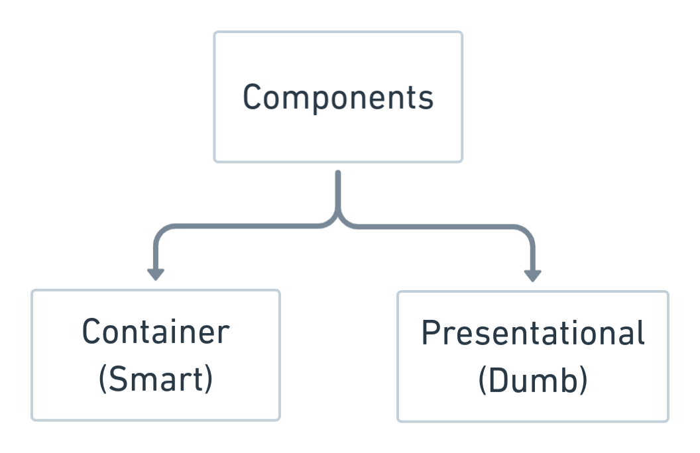
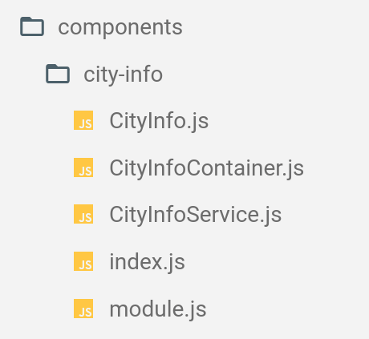

Redux
Chernov Anton, Software Engineer
25 июля 2019
Agenda
- Data binding
- React state management problem
- Redux
- Middleware
- Async request handling
- Reducer composition
- Project structure
- Useful tools
But you should maintain it yourself!
React state management problem
Redux
A predictable state container for JavaScript apps
Redux cycle

Let's rewrite search with redux!
Redux cycle
State
- Immutable object
- Single per app
- ≠ React state
- Think of the shape before writing the code
Reducer
- Takes current state and action, returns updated state
- Returns default state if no actions specified
- Plain JavaScript function
Pure functions
- Same input, same output
- No side effects
- No API calls
- No mutations
Store
- Holds application state
- Allows access to state via
getState()
- Allows state to be updated via
dispatch(action)
- Registers listeners via
subscribe(listener)*
- Handles unregistering of listeners via the function returned by
subscribe(listener)
*
*Don't need this with react-redux
Middleware
Provides a third-party extension point between dispatching an action, and the moment it reaches the reducer.
Use middlewares for
- Logging
- Crash reporting
- AJAX
- Routing
Logging middleware example
Just another type of side effect
Let's rewrite city info app with redux!
Reducer composition
- Each of reducers is managing its own part of the global state.
- Divide state to as small reducers as possible
- Keep depended on each other parts together
- Combine reducers with
combineReducers()
Logical component types

Logical component types
|
Container (smart) |
Presentational (dumb) |
| Purpose |
How does it work? |
How does it look? |
| Aware of Redux |
Yes |
No |
| Read data |
From Redux state |
From props |
| Change data |
Dispatch Redux actions |
Invoke callback from props |
File structure
- Organize by feature
- Create strict module boundaries
- Avoid circular dependencies

Duck pattern
- MUST export default a function called reducer()
- MUST export its action creators as functions
- MUST have action types in the form reducer/ACTION_TYPE
- MAY export its action types as UPPER_SNAKE_CASE
Duck pattern Link
redux-actions
- Reduce amount of boilerplate code
- Consists of several utilities functions. Let's look at:
createAction()handleActions()
Redux actions link
reselect
- Allows Redux to store the minimal possible state.
- Selector is not recomputed unless one of its arguments changes.
- Selectors are composable. They can be used as input to other selectors.
Reselect link
Products are filtered on the fly
Questions?
- React state management problem
- Data binding
- Redux
- Middleware
- Async request handling
- Reducer composition
- Project structure
- Useful tools